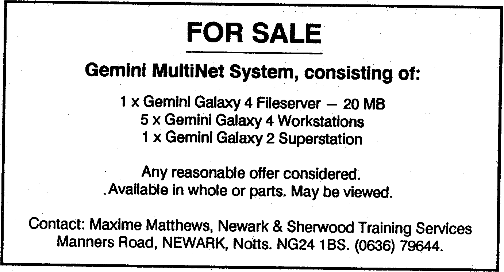

Scorpio News |
January–March 1988 – Volume 2. Issue 1. |
| Page 38 of 39 |
|---|
not the cheapest suppliers. You need the 8MHz version and Computer Express (____ _____) have them at £135 + VAT – there may be cheaper sources around.
Installation of the chips on your GM888 board is easy – just lift out the 8088 and, after bending the pins of the V20 against a hard surface to get them perpendicular to the chip, insert with the U-shaped notch facing the LED. The 8087 goes in with the same orientation. Do take care with the latter – it is a ceramic encapsulated chip (it gets very hot) and a friend of mine broke one in half while attempting to insert it in his PC. Note that the modification will (theoretically) invalidate Gemini’s guarantee.
If you are contemplating carrying out this upgrade on your PC, don’t attempt it unless you feel competent enough to locate the 8088 or 8086 without causing mayhem inside the case. Check the type number of your processor and order the appropriate replacement – it does no harm to have an 8MHz V20 in an IBM PC-XT (4.77 MHz) although the 5MHz 8087 at £95 is a lot cheaper than the 8MHz. version. Most people will extract the appropriate i.c. using a small, flat-bladed screwdriver, rather than a chip-puller but some care is needed. Makers’ guarantees are invalidated by the change.
A two-part article on these processors appeared in the American magazine Micro/Systems Journal in the Nov/Dec 1985 and Jan/Feb 1986 issues (pages 32-43 and 32-36 respectively). The author is Stephen Davis, the article is “Turbocharge your 8086/8088 computer” and it is full of interesting information of considerable importance to anyone who has more than a passing interest in the topic. I have a couple of copies of the article which are available on a first-come basis (with an A4, 20 pence SAE please).
Have fun! ●
| Page 38 of 39 |
|---|